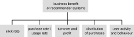
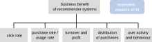

Micro-Degree Artificial Intelligence and Society
– Technical Aspects of AI –
Lecture 4.4: Introduction to Recommender Systems


Recommender Systems
- Recommender systems occur everywhere on the internet.
- They represent one of the most widespread applications of machine learning.

Recommendations on the shopping website Amazon based on my browsing history.
These and the following slides are inspired by Dietmar Jannach's lecture "Recommender Systems: Value, Methods, Measurements".
Applications of Recommender Systems
Why do we need Recommender Systems?
Information Overload
- We live in an information society. In many areas of life, more information is available than we can absorb.
- Example Spotify
- At the beginning of 2024, there were 100 million songs on the platform.
- Assuming each song is 3 min long, it would then take about 5 million hours to listen to all songs.
- A typical human life has about 30,000 hours. Even if we listen to music all the time, we would only hear 0.6% of the available music.
- From the mass of available options, a small part must be selected → recommender systems.
Recommendations on Spotify.
Different Interests
Different stakeholders have different interests in recommender systems.
Consumers
- Find items that satisfy (long-term) needs.
- Make good decisions.
- Discover new items.
Producers / Artists
- Be found.
- Influence purchasing decisions
- Receive information about customers.
- Earn money.
Platforms
- Increase user activity.
- Offer a value-added service
- Collect data about users.
- Show ads.
- Earn money.
How can we measure relevance concretely?
What do we measure?
- Basic assumption: the interests of consumers, producers, and platforms are compatible.
- The market regulates the efficient distribution of attention to items.


Adapted from Jannach & Jugovac Measuring the Business Value of Recommender Systems, ACM TIMS (2019).
Click-Through Rate, Purchase Rate, Usage Rate
- Click-Through Rate (CTR)
- Measures how many clicks are generated from recommendations: It is calculated as the number of clicks / number of impressions.
- Example: News recommendations: how many articles does the user click on?
- Purchase Rate / Usage Rate
- The CTR does not measure whether the user actually read/bought/used the recommended item.
- Example: how many users actually watch a recommended video on Netflix after clicking on it?
User Behavior and Activity
- Assumption: Higher user activity leads to users staying with the service longer.
- This translates to users not cancelling their subscriptions, and/or users seeing more ads.
- Metrics: interactions (likes, shares, comments) with items, time spent with an item.
- For intensity and duration of activity, users and providers/platforms can have different interests. Example: Dating platform.
Source: Printpeppermint.com.
Attention Economy
- In the attention economy, users' attention becomes economic capital.
- Recommender systems that satisfy users' short-term needs such as entertainment can harm their long-term interests.
- Examples: addictive behavior, psychological health, polarization, misinformation.


Source: Skyword.com.
Summary
- Recommender systems are found practically everywhere on the internet where we are confronted with information overload.
- Relevance ot individual items that are subject to recommendations can be measured in different ways, for example, by click-through rate or purchase rate, but also by user activity.
- Consumers, providers, and platforms can have different interests. Problems can arise if for example a recommender systems do not meet the long-term interest of consumers.